MINI JOHN COOPER WORKS
$30,600
Pure power, with a racing pedigree. Every John Cooper Works model is built for jaw-dropping performance, with exclusive bold styling and a turbocharged engine packing up to 231hp (170 kW) of firepower. This is MINI, dialled up to the max.
SEE DETAILS
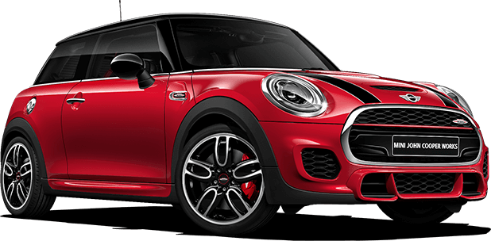 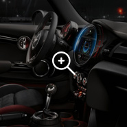 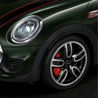 MINI COOPER S
$24,100
The Cooper S is a hoot from head to tailgate - but with even more impressive technology than before, it’s serious fun. Capable of 0-62 mph in a blistering 6.8 seconds, it’s got the muscle to pick on much bigger cars. The go-kart feeling is enhanced.
SEE DETAILS
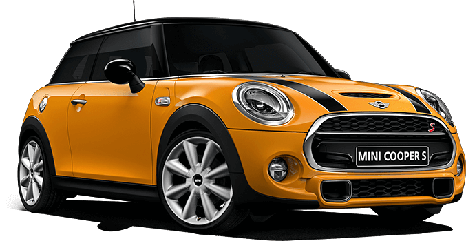 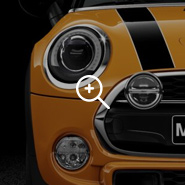 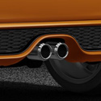 MINI COOPER CABRIO
$28,900
Brace yourself: the new MINI Cooper Convertible is back for more. Reloaded and ready for action. It’s equipped with a more powerful and more efficient Twin Power Turbo engine that’s cleaner and meaner.
SEE DETAILS
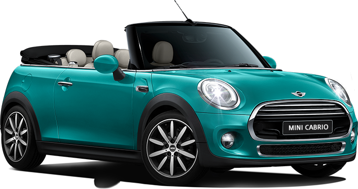 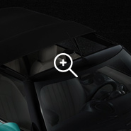 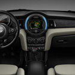MINI COOPER 5-DOOR
$28,900
The new MINI Cooper S hits 100 km/h in 6.9 seconds. 5 people could probably jump in as quickly, thanks to the addition of an extra pair of doors at the rear. But the thrills don’t stop there. A longer wheelbase gives rear seat passengers an extra 72 mm of legroom to wiggle about in.
SEE DETAILS
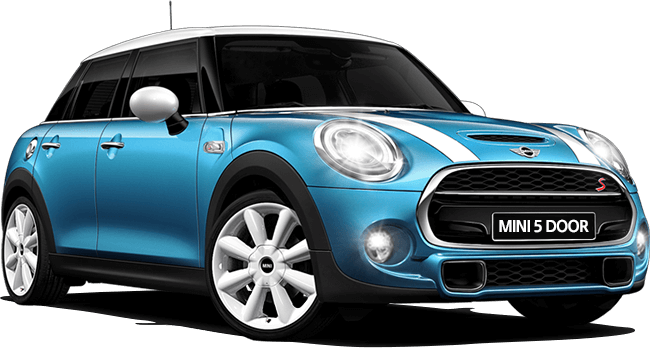 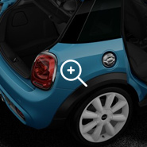 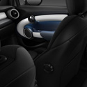